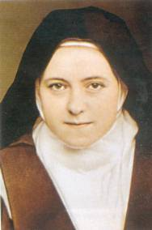
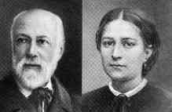
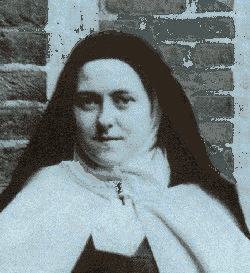

CONSOLAR JESUS
 A Santa nos revela:“Um domingo,
ao fechar o livro de orações no fim da
A Santa nos revela:“Um domingo,
ao fechar o livro de orações no fim da
Missa, ficou aparecendo a extremidade de
um santinho de JESUS Crucificado, que mostrava o sangue fluindo de uma das mãos
trespassadas. Acorreu-me um sentimento inefável e de pesar que encheu de dor o
meu coração, à vista daquele sangue precioso que gotejava sem que houvesse
alguém para acolhe-lo. Então decidi, ficar continuamente em espírito junto a Cruz
do SENHOR, para recolher aquele orvalho Divino da Salvação e aspergi-lo sobre
todas as almas. A partir daquele dia ressoava a cada instante em meu coração as
palavras de JESUS Crucificado: Tenho
Sede! E aos ecos do Divino brado
ateava em minha alma um fogo tão insólito e vivo, que aguçava minha ânsia em dar
de beber ao meu Amado salvando-LHE almas, ao mesmo tempo em que fazia crescer
no meu espírito uma sede indômita, para arrancar a todo custo os pecadores às
chamas do inferno, com o objetivo de suavizar e mitigar ainda mais, a sede do
SENHOR.” (pág 105)

JESUS
SACRAMENTADO

“DEUS desce todos os dias do Céu,
não para ficar esquecido no Cibório de ouro, fechado no Sacrário, mas para repousar
em outro céu, no céu de nossa alma, objeto constante de suas Divinas delícias.” (pág 111)
“Certo dia, contra o meu costume,
estava um tanto inquieta ao aproximar-me da Mesa para receber a Sagrada
Comunhão. Acrescia o fato de que há vários dias comungávamos apenas um pequenino
fragmento da Hóstia Consagrada, porque não havia partículas suficientes para todos.
Mesmo assim, naquela manhã, sem que houvesse motivo para tal procedimento,
gravou em minha mente a idéia fixa de que se não recebesse uma partícula inteira,
era sinal de que NOSSO SENHOR chegava contrariado ao meu coração! Ao ajoelhar-me
para receber a Santa Eucaristia, o sacerdote pára um instante e dá-me a comungar
"duas partículas
inteiras, bem distintas!" Minha
surpresa aliou-se a uma grande satisfação! Sem dúvida, foi uma resposta maravilhosa
e repleta de delicadeza de meu querido JESUS” (pág 179)
inquieta ao aproximar-me da Mesa para receber a Sagrada
Comunhão. Acrescia o fato de que há vários dias comungávamos apenas um pequenino
fragmento da Hóstia Consagrada, porque não havia partículas suficientes para todos.
Mesmo assim, naquela manhã, sem que houvesse motivo para tal procedimento,
gravou em minha mente a idéia fixa de que se não recebesse uma partícula inteira,
era sinal de que NOSSO SENHOR chegava contrariado ao meu coração! Ao ajoelhar-me
para receber a Santa Eucaristia, o sacerdote pára um instante e dá-me a comungar
"duas partículas
inteiras, bem distintas!" Minha
surpresa aliou-se a uma grande satisfação! Sem dúvida, foi uma resposta maravilhosa
e repleta de delicadeza de meu querido JESUS” (pág 179)
OS
SACERDOTES

“Encontrei-me durante um mês com
grande número de
“sacerdotes santos”, e verifiquei que,
embora possuíssem a sublime dignidade sacerdotal que se avantajava sobre os espíritos
evangélicos, nem por isso deixavam de ser homens fracos e frágeis.
Assim, se os “sacerdotes
santos” aos quais JESUS no Evangelho
chama de “sal
da terra” dão sinais de necessitarem
de orações para serem fieis e poderem perseverar no caminho do direito, da justiça
e do amor fraterno, que há de se pensar dos que são tíbios? No Evangelho o SENHOR
pergunta: “Se
o sal perder a sua força, com que tempero se há de salgar?”(Mt 5,13)
“Como é bela a nossa vocação, minha querida Madre! Temos
a missão de preservar da corrupção o “sal da terra”,
oferecendo orações e sacrifícios pelos Sacerdotes, Apóstolos do SENHOR, e
tornando-nos deste modo, guardiãs deles, a fim de que eles continuem com suas
palavras e exemplos evangelizando a alma de nossos irmãos.” (pág 126/127)
CONTROLAR A PRÓPRIA VONTADE
Na época em que Teresinha esperava
completar a idade mínima exigida para entrar no Convento do Carmo, nos dá um
notável exemplo de vida, realizando perseverantes mortificações, para ser mais
digna de NOSSO SENHOR. Suas palavras explicam o seu procedimento:
“Quando falo em
mortificações, não quero me referir às penitências dos Santos. Longe de querer
aparecer como aquelas almas de impressionante valor, que desde a infância se
entregaram a toda sorte de macerações. As minhas mortificações são modestas
e consistem primordialmente em quebrar a minha vontade, e assim, evitar qualquer
resposta áspera ou palavra de réplica, em prestar pequenos obséquios as pessoas
de minha convivência e muitas outras iniciativas deste gênero. Desse modo, ia-me
preparando com o exercício destes “nadas”,
para ser digna esposa de JESUS, utilizando o tempo de espera para aprimorar
na renúncia de mim mesmo, no cultivo da humildade e nas demais virtudes.”
(pág 147)
LUZES DO EVANGELHO
 DEUS derrama em nosso coração as luzes
que necessitamos, iluminando a mente, as palavras e o nosso desempenho. E também para
ajudar, quando sentimos necessidade de apoio espiritual, encontramos na Sagrada Escritura
a inspiração certa e objetiva, que indica o caminho verdadeiro que irá conduzir a solução da
dificuldade e da paz interior. Santa Teresinha descreve sua experiência:
DEUS derrama em nosso coração as luzes
que necessitamos, iluminando a mente, as palavras e o nosso desempenho. E também para
ajudar, quando sentimos necessidade de apoio espiritual, encontramos na Sagrada Escritura
a inspiração certa e objetiva, que indica o caminho verdadeiro que irá conduzir a solução da
dificuldade e da paz interior. Santa Teresinha descreve sua experiência:
“Sobretudo, utilizo o Novo Testamento para entreter-me
com proveito em tempo de oração, pois nele sempre encontro tudo o que necessito,
como luzes que iluminam os sentidos ocultos de alguns acontecimentos, além de
uma misteriosa e objetiva orientação. Compreendo por isso, e sei por experiência,
que o Reino de DEUS está dentro de nós. (Lc 17,21) Para instruir as almas, JESUS não
necessita de livros e nem de professores especialistas, pois sendo ELE o DOUTOR
dos doutores, ensina as palavras sem estrépito e sem qualquer ruído. Nunca
ouvi o som de Sua Voz, mas sei que ELE habita em minha alma, guiando-me e
inspirando-me em todos os momentos, fazendo-me descortinar e saber no instante
em que mais necessito, os clarões e as luzes que até então desconhecia,
iluminando minha mente no momento da oração, ou mesmo durante as ocupações
domésticas de cada dia.” (pág 185/186)
Próxima Página
Página Anterior
Retorna ao Índice